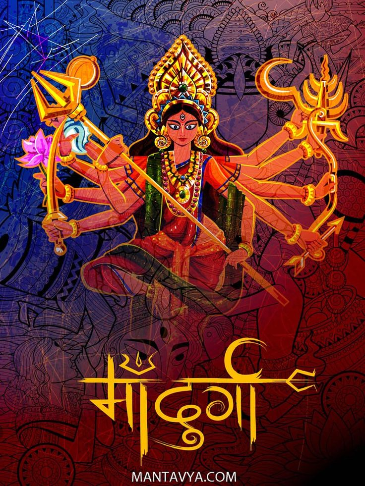

The festival of nine nights,nine forms & divine feminine

Maa Durga
festival of nine days hindu godess are worshipped
It teaches us to respect womens & shows their power
Navratri is a vibrant Hindu festival celebrated for nine nights,
honoring the goddess Durga in her nine forms.
It usually happens in autumn and is full of colors, music, and dance,
especially the traditional Garba and Dandiya dances.
People fast, decorate their homes, and wear bright clothes to celebrate the victory of good over evil.
What makes Navratri interesting is that each day is dedicated to a different form of the goddess,
and communities come together to celebrate,
making it both a spiritual and joyful festival.
Navratri is celebrated nine days
in these nine days we wear nine different colors
day 1: maa Shailiputri
color to wear:- white
purpose:- it represents purity & peace
day 2: maa Brahmacharini
color to wear:-red
purpose:- it represents courage & power
day 3: maa chandraghanta
color to wear:- blue
purpose:- it represents divine energy
day 4: maa Kushmananda
color to wear:-yellow
purpose:- it represents joy,happiness
day 5: maa skandamata
color to wear:-green
purpose:- it represents growth
day 6: maa katyayani
color to wear:-grey
purpose:- it represents strength & transformation
day 7: maa kalratri
color to wear:-orange
purpose:- it represents energy,warthm & enthusiasm
day 8: maa mahagauri
color to wear:-peacock green
purpose:- it represents uniqueness & individuality